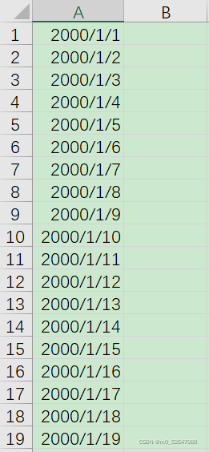
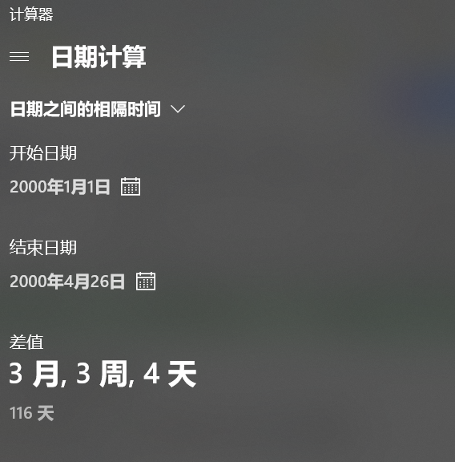
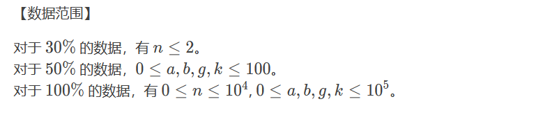

蓝桥杯比赛
1 蓝桥杯赛制
- 蓝桥杯为ACM赛制，需要自己写
输入，输出（重要），所以需要去学习一下Python的输入函数，包括一个变量的输入和多个变量的输入。 - 全国选拔赛时长：4小时。题型为填空题+编程大题（2+8），一共10道题目。虽然说规则中的编译器为IDLE，但是完全可以使用Pycharm，所以直接使用Pycharm就好了，创建一个新的项目就行，IDLE太难用了。
- 蓝桥杯是按照测试点给分的，假设一个题目有10个测试用例，你的程序对了5个就可以拿到50%的分，然后你最终的排名是按照总分来排的。
2 一些常用的技巧
1. 填空题
填空题只需要你直接把计算出来的答案写到系统里面就好了，不需要多加一些其他的东西。，只需要填答案，所以过程是怎么做出来的都可以，日期类可以首先考虑用表格excel做，像什么求过了多少天，求是星期几，用excel做很方便。也可以暴力枚举，毕竟系统只要结果，有些直接用for嵌套就可以做出来，为了做出答案不择手段。
- 使用Excel解决问题
栗子：计算一个日期后几天的的日期，计算2000年1月1日后625天的日期是多少？
方法：输入2000/1/1，然后下拉。

- 使用计算器解决问题
栗子：计算两个日期中间的天数（使用Excel也能解决此类问题） ，计算2000年1月1日和2000年4月26日中间的天数
方法：首先快速调出计算器，win+R,输入calc,打开计算器，选择日期计算。

- 还有许多的类似技巧，Excel是最常用的方法，很方便，很快捷。可以结合实际的题目来学习这个方法，在刷蓝桥杯填空题的时候，可以顺便百度一下这个题目有没有用技巧解决的方法，多练几题就能懂得其中的门道了。（如果真的没有办法就猜一下叭，看你的运气如何，例如直接写当年的年份啥的，说不定就对了呢哈哈哈）
2. 编程大题
对于大题，主要的技巧就是暴力和模板，模板需要多刷题积累了。然后一定需要知道Python的输入输出函数，还有一些基本的计算函数。敲代码之前先把所有题目和分数都大致过一遍，先选简单的再选分数很高但很有把握的写，再选难点题目，不按题号依次递进。
- 模拟 + 暴力
主要是用for循环或者是搜索暴力求解，有些题目会告诉你测试集是怎么分布的，这种题目，你每答对一部分测试集，就能拿一部分的分，全答对了，就满分。题目的样例只有30%的情况下n<=2，可以暴力骗分。

所谓模拟，就是用计算机程序来模拟实际的事件。例如NOIP2012的“寻宝”，就是写一个程序来模拟小明上藏宝塔的动作。模拟主要可以应用在骗高级数据结构题上的分，例如线段树。
- 打表（适用于小数据）
打表就是直接输出，对于有的题输入的数据小，对应的输出数据也就固定了，因为拿分才是目的，直接打印出输出数据就好了~
栗子：火柴棒等式NOIP2008T2]火柴棒等式 - C语言网 (dotcpp.com)
给你n根火柴棍，你可以拼出多少个形如“A+B=C”的等式？等式中的A、B、C是用火柴棍拼出的整数（若该数非零，则最高位不能是00）。
用火柴棍拼数字0-9的对应如下所示：
0->6根 1->2根 2->5根 3->5根 4->4根 5->5根 6->6根 7->3根 8->7根 9->6根
开始打表：
1 | |
- 其他
要是没有时间了，或者是不会写，那就直接看一下题目，然后输出一个特定值啥的，一般为（-1,0,1）
1 | |
PS：这里只写了一点点的技巧，但是感觉也足够用了，其他一些高阶的技巧，需要高阶的技术（DFS，树等等），有时间可以学学。然后就是多看多练。
3. 注意事项
可以重复提交同一道题目，系统会保留最后一次内容。也就是说最后时间不多的时候，你觉得你现在这道题样例已经可以过了，就算不完善也先把代码提交一下，然后再继续完善修改，大不了等完善好了再提交就是了。因为这样万一时间到了你还在修改没提交，那之前提交的不完善的代码也有可能有个保底的几分，这样总比没交好。（一切都是为了得分，而不是为了得满分）
一些常用的练习网站：
B站上up主的讲解和一些博客：
3 Python常用库
熟悉一些Python常用的函数和库（注意只能是标准库，就是能在Python手册上找到的）。然后Python的官方文档可以直接用的，比赛的时候，忘了函数怎么用的就直接查就好了，这个下载IDLE的时候会自带下载的。如何下载使用Python自带的官方文档，如何查用python自带的.chm官方文档_python3.10 chm-CSDN博客。
1. 基本常用函数
input()函数： 接受用户输入并返回所输入的 string 类型数据
1
2
3
4
5
6
7
8
9
10
11
12
13
14
15
16
17
18
19
20
21
22
23
24
25
26# 1. 一行输入
s = input() #输入abc回车
print(s)
# 输出：abc
# 2. 多行输入，以下几种
data1 = [int(input()) for _ in range(2)]
print(data1)
data1 = [list[map(int, input().split()) for _ in range(2)]]
print(data1)
list3 = []
list4 = []
for i in range(2):
m, n = map(int ,input().split())
if m > 0:
list3.append(m)
else:
list4.append(n)
print(list3)
print(list4)
# 灵活运用，主要学习 map().split() 这种形式占位符 格式化数据
1
2
3
4
5
6
7
8
9
10
11
12
13
14
15
16
17
18
19
20# 1. format()函数：
"{} {}".format("hello", "world")
print("{:.2f}".format(3.1415926));
# 输出
'hello world'
3.14
# 2. %对应{:}
%s 字符串 {:s} # {:#x}.format(18)#将18保存为16进制的格式
%d 整数 {:d}
%.2f 浮点数字(用小数点符号，4舍5入) {:.2f}
%.2e 浮点数字(科学计数法) {:.2e}
‘12’12加引号的就是字符，不加就是数值
print("最后%s,%s天%.2f时"%('的',32,125.158))
print('还有{},{:d}天{:.2f}时'.format('最后',32,123.158))
print('{:0>5}'.format('33'))#一共填充5个数字，前4个为0len()函数： 返回一个对象的元素或项目个数
1
2
3
4
5
6
7len([1,2,3,4])
# 输出：4
# 二维矩阵外层为行，内层为列
array = [[1,2,3],[4,5,6],[7,8,9]]
print(len(array)) # 行数
print(len(array[0])) # 列数输出函数
1
2
3for i in range(10):
print(i,end='')#打印在一行
print(i,end='\n')#换行符结尾切片
切片可以切列表，字符串，不能且int（可转化）
切片包含起点，不包含终点
对于未指明起点的，步长=1，从0开始，步长=-1，从最后一位开始
1
2
3
4
5
6
7
8
9
10
11
12a=[0,1,2,3,4,5]
# 1. 对于未指明起点的，步长=1，从0开始，步长=-1，从最后一位开始
print(a[:3:1]) # --> [0, 1, 2]
print(a[:3]) # --> [0, 1, 2]
print(a[:3:-1]) # --> [5, 4]
print((a[::-1])) # -->[5, 4, 3, 2, 1, 0]
print(a[:2:-1]) # --> [5, 4, 3]起点为index=-1，从后往前走，不包括终点2
# 2. 从起点1，倒着走到3，返回空
print(a[1:3:-1]) # --> []不会返回，所以为空
print(a[3:1:-1]) # --> [3, 2]可以
2. 数学函数
- abs() 函数：取绝对值
print(abs(-10)) --> 10 - divmod() 函数 ：同时取商和余数
print(divmod(7,2)) --> (3,1) - sum() 函数 ：求和计算
print(sum([1,2,3])) --> 6 - round() 函数： 四舍五入
print(round(5.1)) --> 5, print(round(5.5)) --> 6 - min() 函数 ：获取最小值
print(min(9,5,2,7)) --> 2 - max() 函数 ：获取最大值
print(max(9,5,2,7)) --> 9 - ceil() 函数 ：向上取整
print(math.ceil(3.1)) --> 4，要import math - floor() 函数 ： 向下取整
print(math.floor(3.1)) --> 3 - pow() 函数 ：计算任意N次方值
print(math.pow(2,3)) or print(2**3) --> 8 print(math.pow(8, 1/3)) --> 2.0 - gcd() 函数 : 两个或多个整数的最大公约数
print(math.gcd(3, 6)) --> 3 - lcm() 函数 : 两个或多个整数的最小公倍数
print (math.lcm(3, 6)) --> 6
3. 数据转换函数
- hex() 函数： 十进制转换成十六进制
print(hex(100)) --> 0x64 - oct() 函数： 十进制转换成八进制
print(oct(100)) --> 0o144 - bin() 函数 ：十进制转换成二进制
print(bin(100)) --> 0b1100100 - ord() 函数 ：获取单个字符的ASCII数值
print(ord('A')) --> 65，PS：要记得 'a' 和 'A'的编码 - chr() 函数： 转换一个整数并返回所对应的字符
print(chr(65)) --> A
4. 对象、迭代器函数
open()函数：打开文件并返回文件对象
f1 = open('E:\Hello.txt','r') --> print(f1.readline())set()函数：创建一个无序不重复元素集合
set([1,2,1,1,3,4,4,6,5]) --> {1, 2, 3, 4, 5, 6}sorted() 函数： 对可迭代对象进行排序
1
2
3
4a = [3,1,4,2]
sorted(a)
# 输出： [1, 2, 3, 4]map()函数： 通过自定义函数实现对序列的元素映射操作并返回操作后的结果
1
2list(map(int,['1','2','3']))
# 输出： [1, 2, 3]dict()函数 ：字典函数（常用），也可以自己创建字典
1
2
3
4
5
6
7
8
9
10
11
12
13
14
15
16from collections import defaultdict
s = [('yellow', 1), ('blue', 2), ('yellow', 3), ('blue', 4), ('red', 1)]
d = defaultdict(list)
for k, v in s:
d[k].append(v)
a = d.items()
print(a)
b = sorted(d.items())
print(b)
"""
输出：
dict_items([('yellow', [1, 3]), ('blue', [2, 4]), ('red', [1])])
[('blue', [2, 4]), ('red', [1]), ('yellow', [1, 3])]
"""
5. 字符串操作
- 返回 str 在 string 里面出现的次数，如果 beg 或者 end 指定则返回指定范围内 str 出现的次数。
string.count(str, beg=0, end=len(string))
- 检测 str 是否包含在 string 中，如果 beg 和 end 指定范围，则检查是否包含在指定范围内，如果是返回开始的索引值，否则返回-1。
string.find(str, beg=0, end=len(string))
- 跟find()方法一样，只不过如果str不在 string中会报一个异常。
string.index(str, beg=0, end=len(string))
- 以 string 作为分隔符，将 seq 中所有的元素(的字符串表示)合并为一个新的字符串。
string.join(seq)
- 在 string 上执行 lstrip()和 rstrip()。
string.lstrip(), string.rstrip()
- 转换 string 中的小写字母为大写。
string.upper()
- 转换 string 中所有大写字符为小写。
string.lower()
- 翻转 string 中的大小写。
string.swapcase()
- 怎样将以下列表转化为整数？
1 | |
4 最后
蓝桥杯的Python组想要获奖的话其实真的挺容易的，报的人比较少，所以你要相信你自己，能做到的！emmm，然后就是有时候立flag是挺好的事情，虽然总说立了就倒，但有时候过程其实比结果更重要，不是嘛，尤其是在学习上面，况且倒了就倒了呗，没啥可惜的，也不会失去啥东西。所以不需要有啥压力，心理负担啥的。想要的东西就努力去争取，然后相信自己，尽管去做就行了，其他的就交给其他叭~。
最后，保三争二，加油！！！